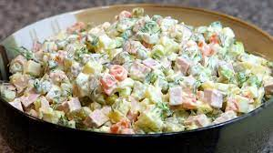

Description
Olivier is a traditional salad dish in Russian cuisine
Ingredients
- potatoes
- carrots
- peas
- ham
- eggs
- mayonnaise
Steps
- Boil the Carrots, Potatoes, & Eggs: In a large pot, boil the carrots and potatoes until they are easily pierced with a fork
- Dice the Salad Ingredients: With a sharp knife, dice the onions, carrots, potatoes, eggs, and bologna/ham into small cubes. In a large bowl, mixed the finely diced ingredients with the peas. Stir with a spoon until well-combined.
- Toss with Dressing: Toss the salad ingredients with the mayo and season to taste with salt and pepper